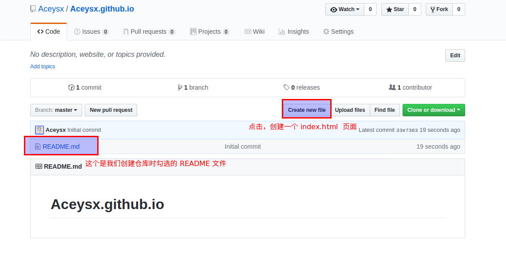
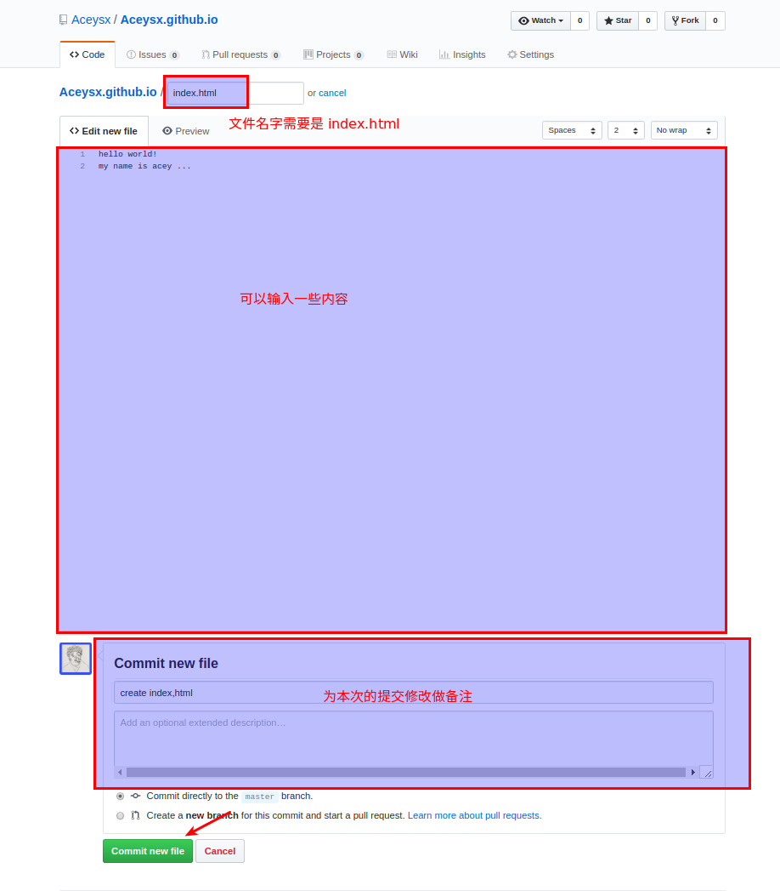
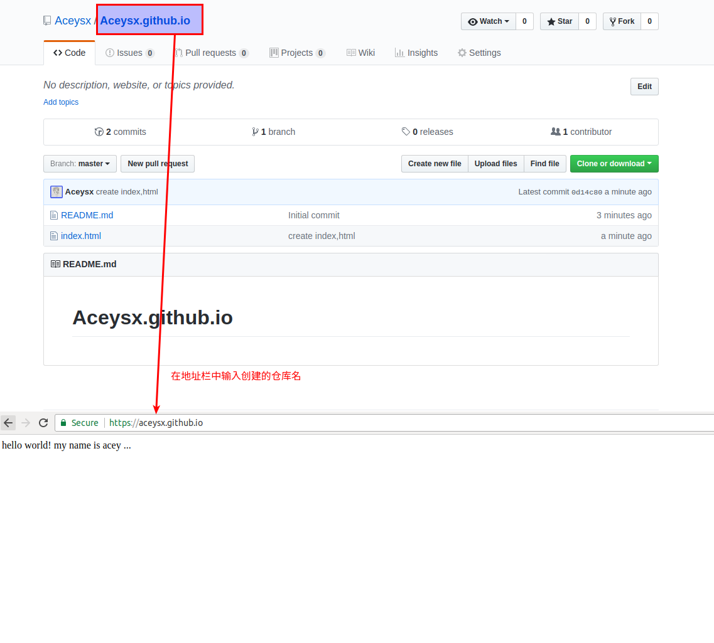

GitHub Pages
本节学习目标
- 能够使用 GitHub Pages 来搭建自己的静态页面
本节学习内容
观看下面视频了解GitHub:
那么什么是GitHub Page呢？
- 什么是 GitHub Pages
GitHub Pages 是 GitHub 的静态页面托管服务。它设计的初衷是为了用户能够直接通过 GitHub 仓库来托管用户个人、组织或是项目的专属页面。参考：What is GitHub Pages?
很多人用它来托管自己的个人博客、个人简历或者是一些 HTML5 的小游戏，这一切都是免费的，但 GitHub Pages 也有一些 限制
- 仓库存储的所有文件不能超过 1 GB
- 页面的带宽限制是低于每月 100 GB 或是每月 100,000 次请求。
- 每小时最多只能部署 10 个静态网站。
- 搭建自己的静态网站
第一步：创建一个 GitHub 账号
第二步：创建一个仓库
使用 username.github.io 作为仓库名，其中 username 是你 github 的用户名。最后点击 create repository

第三步：在创建好的仓库中添加一个 index.html 文件



这样一个简单的静态网站就搭建成功了，你可以把网址发给小伙伴，你的小伙伴就可以看到你的网站了。
注：第三步的操作也可以使用 Git 来完成
资源与工具
- 如何使用 GitHub
- GitHub pages 搭建
- 廖雪峰的 Git 在线教程：http://www.liaoxuefeng.com/wiki/0013739516305929606dd18361248578c67b8067c8c017b000
- Git 的基础内容的学习： https://try.github.io/
本节练习
- 先注册一个GitHub账号，在GitHub中新建一个库，尝试
git clone到本地进行修改，并git push上传到Github。 - 编写一个静态页面，上传到自己的 GitHub Pages 中并回复链接地址。